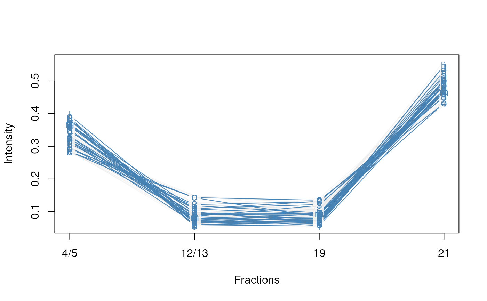
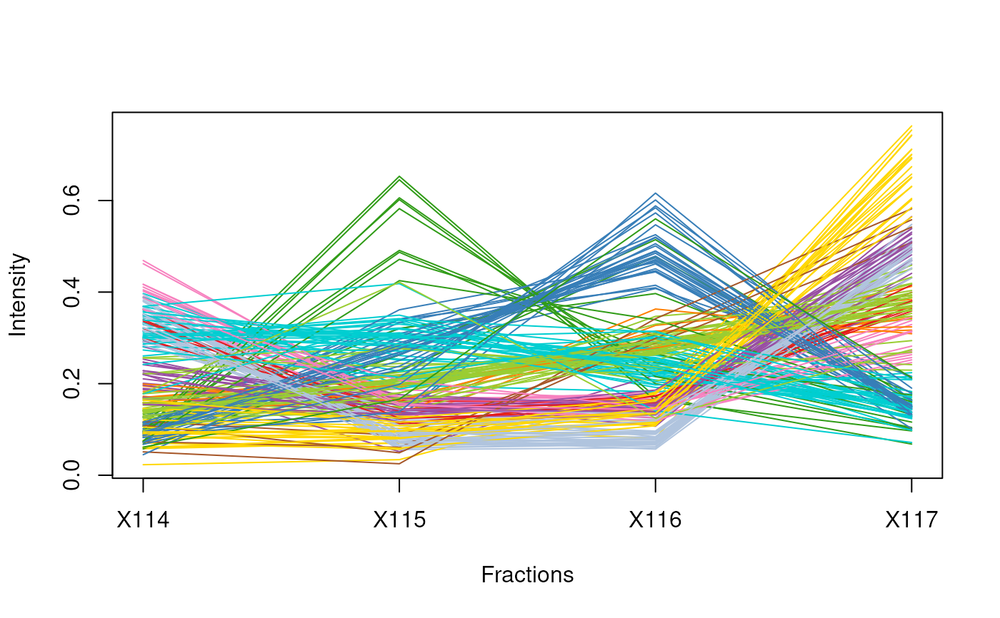

Produces a line plot showing the feature abundances across the fractions.
Usage
plotDist(
object,
markers,
fcol = NULL,
mcol = "steelblue",
pcol = getUnknowncol(),
alpha = 0.3,
type = "b",
lty = 1,
fractions = sampleNames(object),
ylab = "Intensity",
xlab = "Fractions",
ylim,
...
)Arguments
- object
An instance of class
MSnSet.- markers
A
character,numericorlogicalof appropriate length and or content used to subsetobjectand define the organelle markers.- fcol
Feature meta-data label (fData column name) defining the groups to be differentiated using different colours. If
NULL(default) ignored andmcolandpcolare used.- mcol
A
characterdefine the colour of the marker features. Default is"steelblue".- pcol
A
characterdefine the colour of the non-markers features. Default is the colour used for features of unknown localisation, as returned bygetUnknowncol.- alpha
A numeric defining the alpha channel (transparency) of the points, where
0 <= alpha <= 1, 0 and 1 being completely transparent and opaque.- type
Character string defining the type of lines. For example
"p"for points,"l"for lines,"b"for both. Seeplotfor all possible types.- lty
Vector of line types for the marker profiles. Default is 1 (solid). See
parfor details.- fractions
A
characterdefining thephenoDatavariable to be used to label the fraction along the x axis. Default is to usesampleNames(object).- ylab
y-axis label. Default is "Intensity".
- xlab
x-axis label. Default is "Fractions".
- ylim
A numeric vector of length 2, giving the y coordinates range.
- ...
Additional parameters passed to
plot.
Value
Used for its side effect of producing a feature distribution plot. Invisibly returns the data matrix.
Examples
library("pRolocdata")
data(tan2009r1)
j <- which(fData(tan2009r1)$markers == "mitochondrion")
i <- which(fData(tan2009r1)$PLSDA == "mitochondrion")
plotDist(tan2009r1[i, ], markers = featureNames(tan2009r1)[j])
plotDist(tan2009r1[i, ], markers = featureNames(tan2009r1)[j],
fractions = "Fractions")

## plot and colour all marker profiles
tanmrk <- markerMSnSet(tan2009r1)
plotDist(tanmrk, fcol = "markers")
